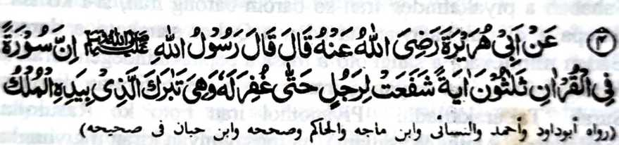
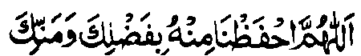

Miyakathitayan ko Abu Hurairah (Radhiallaho ‘Anho) a pitharo iyan a pitharo o Rasulollah (Sallallaho ‘Alaihi wa Sallam), “Aden a madadalem ko Qur’an a Surah a telo polo a Ayaat iyan a zapa-aten niyan so tao taman sa karila-an sekaniyan. Giyoto so Tabarakalladhi biyadihil Molk.”
So makapantag ko Surah ‘Tabarakalladhi’, na aden pen a ‘riwayat’ a pitharo o Rasulollah (Sallallaho ‘Alaihi wa Sallam), “So poso aken a tanto niyan a mandidingan-dingan a giyangka-iya Surah na mapadalem ko poso o pithanggisa-an o miyamaratiyaya.”
Miya-aloy niyan sa isa a Hadith, a sa tao a batiya-an niyan so Surah ‘Tabarakalladhi’ ago so ‘Alif-Lam-Mim-Sajdah’, ko pageletan o Sambayang ko Maghrib ago so Sambayang ko ‘Isha, na lagid sekaniyan o tao a initindeg iyan so Sambayang ko miyababasa-gawi-i ko ‘Lailat-ul-Qadr’ [ika 27 a gagawi-i ko Ramadhan - olan-olan a kaphowasa a ika 9 a olan-olan ko Taqwim o manga Muslim]. Miyapanothol pen a o aden a tao a batiya-an niyan angkanan a dowa a Sowar, na pito polo a mapiya a i-oman ko ‘amal iyan a mapiya ago pito-polo ko manga dosa niyan na iperila-on. Miya-aloy niyan ko isa a ‘riwayat’, a o batiya-a o tao angkanan a dowa a Sowar, na isorat a bagi-an niyan so lagid o ba niyan initindeg so Sambayang sa miyababasa-gawi-i ko Lailat-ul-Qadr. Miya-aloy niyan pena-i ko [kitab a] Mazahir.
So Tirmidhi (Rahmatullahi ‘Alaihi) na piyanothol iyan a pho-on ko Ibn-e-Abbas (Radhiallaho ‘Anho), “Aden a manga Sahabah a piyakatindeg iran so barom-barong iran, si-i ko isa a darepa a di ran katawan na aden a Qobor sangkoto a darepa. Baden minitekao, a sangkoto a masa a pephakatindegen niran so barom-barong, na miyaneg iran a tao a pembatiya-an niyan so Surah ‘Tabarakalladhi’. Piyanothol iran noto ko Rasulollah (Sallallaho ‘Alaihi wa Sallam), na inosay niyan kiran a giyangka-iya a Surah na linding ko manga siksa o Allah ago phakatangked ko kapakaselang sa maliwanag.”
So Jabir (Radhiallaho ‘Anho) na piyanothol iyan a so Rasulollah (Sallallaho ‘Alaihi wa Sallam) na diden phakatorog taman sa di niyan mabatiya so Sowar ‘Alif-Lam-Mim-Sajdah’ ago so ‘Tabarakalladhi’.
So Khalid Ibn-e-Ma’dan (Radhiallaho ‘Anho) na miyatharo iyan a miyaneg iyan a tothol, “Aden a mama a baradosa, ogaid na lalayon niyan pekhabatiya so ‘Surah Sajdah’. Daden a salakao a pembatiya-an niyan. Giyangkanan a Surah na giyayad iyan so manga papak iyan sangkoto a mama oriyan niyan na pitharo iyan, ‘Kadenan ko! Giyangka-iya mama na lalayon ako niyan pembatiya-an.’ So sapa-aton angkoto a Surah na tiyarima o Allah, Inisogo a omani dosa niyan na sambi-an sa mapiya ‘amal.”
So Khalid ibn-e Ma’dan na piyanothol iyan pen, “Giyangka-iya Surah a zapa-aten niyan so pembatiya on si-i ko Qobor a gi-i niyan tharo-on, ‘Ya Allah! O benar bo a madadalem ako ko Kitab Ka, na tarima-a Ngka so sapa-at aken, o di na pakiponasen ako Ngka ko Kitab Ka.’ Giyangka-iya Surah na phaniyaropa sa papanok, a nggayaden niyan so manga papak iyan ko miyatay na ziyapen niyan ko siksa ko Qobor.” Miya-aloy niyan pen a giyangka-iya kalbihan na lagidoto mambo [a madadalem] ko Surah ‘Tabarakalladhi’. Sekaniyan na diden phakatorog taman sa di niyan mabatiya angkanan a dowa a Surah.
So Ta’us (Rahmatullahi ‘Alaihi) na pitharo iyan, “Giyangka-iya a dowa a Surah na kadadaleman sa nem-polo a kalbihan a milalawan niran ko kalbihan o apiya antona-a Surah.”
So siksa ko Qobor na kena ba mapendidimatag. Oriyan o kapatay, na aya paganay a towak a khaokitan o tao na so Qobor. Oman tomindeg so Uthman (Radhiallaho ‘Anho) ko Qobor, na pengora-ok sekaniyan sa tanto a mala taman sa so manga sompa iyan na pekhabasa o lo’ iyan. Aden a miniza-on o ino a igira miya-aloy so Qobor na mala-a kapephakagora-ok iyan a di igira miya-aloy so Sorga ago so Naraka. Inisembag iyan, “Miyaneg aken ko Rasulollah (Sallallaho ‘Alaihi wa Sallam) a so Qobor na aya paganay a towak ko Alongan a Maori. Sa tao a makalidas ko kasiksa-an non, na so phamakatondog a darepa na langon rekaniyan phakalebod, go so tao a di si-i makalidas ko siksa, na sekaniyan na so langon o phakatondog a khaola-ola niyan na lebi a maregen. Ago miyaneg aken a dapen a siksa a piyakalek-lek a ba niyan kalawani so madadalem ko Qobor.”

Ya Allah! Pakalidasa kami Ngka rekaniyan [a siksa] sabap ko limo Ngka go so gagao Ngka.